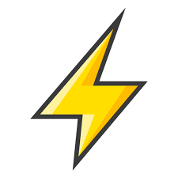
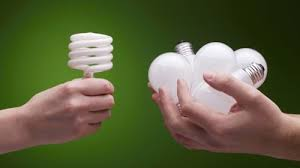
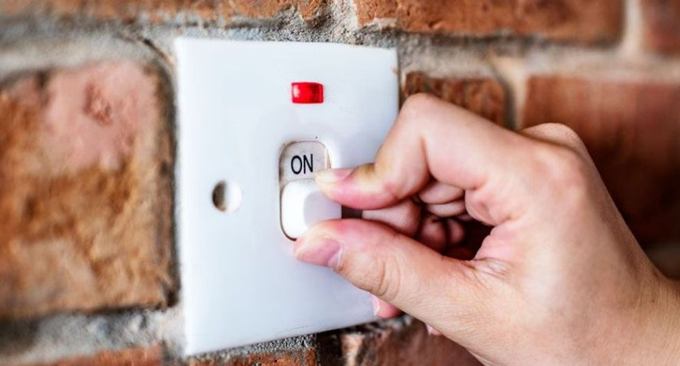
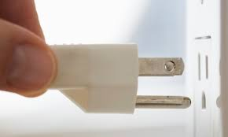
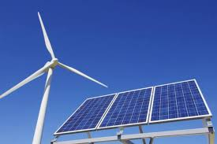

Ahorrar energía no solo ayuda a nuestros bolsillos, también es una medida para cuidar el ambiente y aquí te compartimos algunos consejos para hacerlo tanto en la casa como en la oficina.

Más allá de evitar usar energía, se trata de utilizarla de manera eficiente, es decir, necesitar menos para realizar una tarea, así se reduciría la cantidad de emisiones nocivas para el ambiente.
De acuerdo con la CFE, hay algunos consejos sencillos que seguir y que se pueden poner en práctica todos los días. Para ahorrar energía en casa, lo primero que hay que hacer es revisar la instalación eléctrica: debes desconectar todos los aparatos que consumen energía y revisar el medidor, que debería detenerse por completo. Si continúa girando, se debe llamar a un técnico para que la revise.
Otro de los consejos que da la CFE es desconectar focos y aparatos cuando no sean utilizados, así como colocar aparatos de aire acondicionado en lugares frescos, pues ahí consumen menos energía. También es recomendable revisar que los aparatos no tengan fallas, ya que si las tienen pueden llegar a consumir más energía.

Usar focos ahorradores
Los focos ahorradores son bombillas fluorescentes compactas que brindan una corriente luminosa semejante a los focos convencionales.
*Al ser ahorradores de energía, pueden duran de 8 a 10 años, si se utilizan en promedio de 3 a 4 horas. Otra de las virtudes de esta forma de iluminación es que pueden permanecer encendidas por periodos largos de tiempo y encenderse y apagarse de forma repetida, esto no afecta ni a su rendimiento ni a su vida útil.
*Al desprender menos calor que los focos normales, es muy bueno para climas calientes y cuartos cerrados.
*Permite reducir en 80% las emisiones de CO2 por la disminución del consumo energético en todos los sectores.
*Ahorran entre 70 y 80% de energía en comparación con los focos tradicionales.
*Generan 80% menos de calor que los incandescentes, lo que reduce el riesgo de incendio.

Apagar las luces cuando no se usan
Si quieres reducir tu consumo de electricidad, la primera medida es instaurar como regla familiar que cada vez que una persona abandona una habitación debe apagar la luz.
La iluminación es responsable del alrededor del 20% del consumo eléctrico en un hogar de clase media, según Osinerg. Por eso, apagar las luces en las habitaciones donde no sean necesarias incidirá en un notable ahorro.
*Considera instalar temporizadores o sensores de presencia para reducir la cantidad de tiempo de operación de las luces.
*Aprovecha la luz del día. Utiliza cortinas claras y sueltas en las ventanas para permitir la entrada de la luz.
*Decora o pinta los ambientes de tu casa con colores claros que reflejen la luz del día.
*Usa lámparas para tareas específicas, como leer o coser, en vez de iluminar toda una habitación.

Desconectar los electrodomesticos que consumen electricidad
La mayoría de los electrodomésticos, cuando están apagados, en realidad permanecen en stand by y tienen encendida una lucecita que así lo indica. Durante este tiempo, continúan consumiendo energía eléctrica aunque no se estén usando. Si tu televisor, tu Dvd, tu equipo de música, u otro electrodoméstico puede encenderse simplemente con un control remoto, quiere decir que éste no está apagado totalmente y sigue consumiendo energía. La diferencia entre prender un aparato con un botón o control remoto y volver a enchufarlo es mínima en relación al esfuerzo que requiere pero puede significar una gran diferencia en el uso de la energía. En casi todos los hogares existen una gran cantidad de electrodomésticos que permanecen todo el día enchufados consumiendo energía: televisores, radios, microondas, reproductores de Dvd, impresoras etc. Si desenchufas los electrodomésticos, además de ayudar a cuidar el planeta también terminaras ahorrando dinero en energía, ya que gran parte del consumo de energía se debe a todos los aparatos electrónicos que están en stand by.

Usar fuentes de energia renovables
En la lucha contra el cambio climático cobra especial relevancia el empleo de la energía renovable. Son energías renovables aquellas que se obtienen a partir de fuentes naturales inagotables y generan electricidad sin contribuir al calentamiento global.
*Las diferentes fuentes naturales para generar energía limpia incluyen el viento, la luz solar, el agua, el calor geotérmico, las mareas, y diversas formas de biomasa, siendo todas ellas inagotables y encontrándose en constante renovación.
*La eólica es una de las energías renovables más extendida en la actualidad. Esta energía aprovecha la fuerza del viento para generar electricidad.
*Por su parte, la energía solar fotovoltaica transforma directamente la radiación solar en electricidad gracias a los paneles solares integrados por células fotovoltaicas.
*La energía termosolar, también llamada termoeléctrica concentra con espejos la radiación solar para calentar un fluido con el que producir vapor y con éste, a su vez, electricidad.
*En el caso de la energía hidráulica, se aprovecha la fuerza del agua en movimiento para producir y en ocasiones almacenar electricidad limpia.
*Por último, la biomasa utiliza materia orgánica como fuente de energía. Esta materia puede ser natural, residual o procedente de cultivos energéticos.